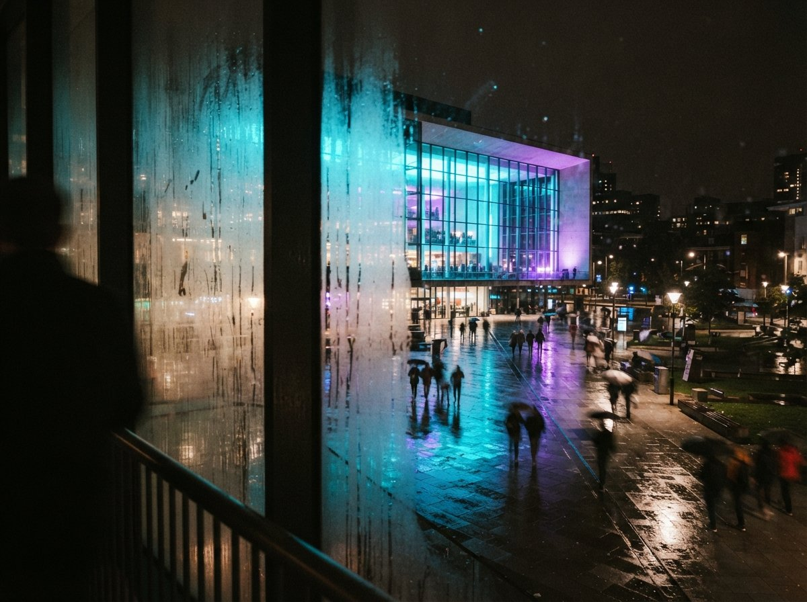

You get a JPEG. Not a Revit file, not a SketchUp export, not even a PDF with vector edges, just a flat rendered image a consultant sent over, or a photo of a physical model, or a screenshot pulled from a client's old pitch deck. You need to push it through ComfyUI to fix the lighting or restyle the materials, and every geometry-locked workflow you have ever built starts the same way: export a depth pass and a canny edge map from the source file, feed both into ControlNet, generate. Except there is no source file. That first step is gone before you have started.
The gap every "hold the geometry" guide skips
Most ComfyUI archviz tutorials assume you are the one who modeled the building, so of course you can export a depth channel from Enscape or a Z-buffer from V-Ray, or bake a canny map straight off the Revit view. That assumption holds for a big share of studio work and fails constantly the moment a render crosses a desk: a competition board from an old employee, a marketing image from a developer, a scan of a physical massing model nobody digitized. In all of those cases you have pixels and nothing else, and the guides that say "just export your depth pass" are quietly talking to someone else.
The r/comfyui thread this piece is built on names the fix without dressing it up: if you don't have access to the original depth or canny from the rendering software, run it through a preprocessor instead. The preprocessor's job is to look at a single flat image and guess the geometry that produced it, well enough for ControlNet to hold onto while a diffusion model repaints the surface.
What a real depth pass is, and what DepthAnythingV3 does instead
A native depth pass is not a guess. It comes straight out of the renderer's own math: every pixel gets the exact distance from camera to surface, because the renderer already knows the geometry, the camera position, and the units. Enscape, V-Ray, and Twinmotion all expose this as a raw export. It is ground truth, not an estimate.
DepthAnythingV3 has none of that information and produces a depth map anyway, from one image, no camera data and no model behind it. It is a monocular depth estimation network, trained on a large spread of real and synthetic scenes to predict relative distance from visual cues alone: perspective lines converging, one object partly hiding another, the way surfaces shrink toward a vanishing point. Feed it your flat JPEG and it hands back a grayscale map that reads, at a glance, exactly like a real depth pass. ControlNet cannot tell the difference. The building can.
The workflow, node by node
The graph is short, which is most of its appeal. Load the flat image. Route it through a DepthAnythingV3 preprocessor node to produce the estimated depth map, or a canny edge node if you want hard lines instead of a distance field. Feed that map into a ControlNet loader set to the matching model (depth or canny), pair it with your checkpoint and prompt, and generate through your usual sampler. No BIM file touches the graph at any point. The entire geometry constraint comes from a single flat image and a network's guess about what produced it.
| Native depth pass | DepthAnythingV3 estimate | |
|---|---|---|
| Source | Exported from the render engine's own geometry | Inferred from one flat image, no model needed |
| Accuracy | Exact distance, every pixel | Relative distance, learned from visual cues |
| Requires | The original 3D file and render software | Any image, source file or not |
| Weak point | None, it is ground truth | Reflective, transparent, or thin surfaces |
| Best fit | You modeled the building | You were only handed the picture |
Where the estimate holds, and where it quietly gives up
On broad massing, the estimate is close enough that the gap rarely matters. A street-facing facade, a simple gable, a courtyard wall, a stair running from foreground to background: these have strong perspective cues and clean occlusion, exactly what a depth network is trained to read, and DepthAnythingV3 places them correctly almost every time. If your job is restyling materials on a building whose form is not in question, an estimated depth map will hold that form as well as most native passes do.
The failures show up in exactly the surfaces that make architectural rendering hard in the first place. Glazing is the worst case: a curtain wall reflects its surroundings and lets you see through to what is behind it in the same pane, and a network guessing from pixels alone has no reliable way to decide which distance that glass actually sits at. Thin elements read the same way; a mullion, a railing baluster, or a slender structural member can vanish into the surrounding plane because there is not enough visual signal to separate them from what is behind. And anything fully occluded in the source photo, a recessed doorway, the far side of a chamfered corner, simply is not in the estimate, because the network never saw it and cannot invent depth for a surface it cannot see.
A native depth pass is ground truth. DepthAnythingV3 is an educated guess from one photo. On massing, the guess is close enough to matter. On glass, it is a guess and nothing more.

Canny as the other lever
The same r/comfyui thread treats depth and canny as a pair, not a choice, and that is the more useful way to think about it. A canny preprocessor extracts hard edges rather than a distance field, and it is often the stronger constraint on the exact building lines: window mullions, roof edges, the crisp break where one wall plane meets another. Depth keeps the overall volume from drifting; canny keeps the specific edges from wandering. Running both ControlNets together, depth for the big shape and canny for the fine lines, covers more of what a native pass would have given you than either alone, and it is the closest a flat image gets to a true geometry lock.
Our take
The honest framing is that a preprocessor like DepthAnythingV3 is a substitute, not an equivalent, and treating it as either useless or perfect gets you into trouble. Useless is wrong because it holds massing well enough for a huge share of real requests: restyle a facade, change the time of day, swap the material on a wall that is not made of glass. Perfect is wrong because the moment a curtain wall or a thin railing enters the frame, the estimate is working from less information than it needs and will occasionally guess wrong in a way a native pass never could. Know which job you are asking it to do before you trust the output, and check the glazing and the thin members by eye every time, because that is exactly where the estimate is weakest and exactly where a client will look first.
No source file was never a reason to skip the geometry lock. It was only ever a reason to estimate one.
Written from the 3 August 2026 intel sweep, which surfaced an r/comfyui thread on architectural visualization recommending a DepthAnythingV3 preprocessor when the original render software's depth or canny pass is unavailable, alongside related r/archviz and r/FluxAI threads on ComfyUI enhancement workflows. ArchiGen AI carries no sponsored placements.